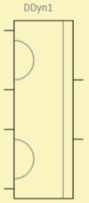
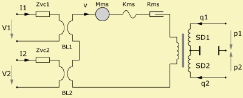

Elec-Dyn Driver (2 VC)
| Home | LE-Part | Electro-acoustic |
 |
 |
 |
Parameters
| Caption | String | Name of component |
| Formula | String | Formula of parameters |
| Diaph front | Ref or size | Diaphragm size of front side |
| Diaph rear | Ref or size | Diaphragm size of rear side |
| Mms | kg | Mass of vibrating assembly |
| Kms | N/m | Total stiffness of suspensions |
| Rms | Ns/m | Mechanic resistance |
| fs | Hz | Fundamental Resonance |
| Qms | Mechanical Quality Factor | |
| Creep | Factor of creep-formula | |
| Is ASym | Boolean | False: VC symmetric True: VC asymmetric |
| Re1 | Ω | Voice coil resistance at DC. |
| BL1 | N/A | Force Factor of motor. |
| Qes1 | Electrical Quality Factor. | |
| VC1 | HF voice coil parameters. | |
| Re2 | Ω | (Second voice coil) |
| BL2 | N/A | |
| Qes2 | ||
| VC2 |
The Elec-Dyn Driver (2VC) is a lumped element six-pole-component featuring an electro-acoustic transducer with an electro dynamic motor which has two independent voice coils.
To the left there are two ports of the electric domain. If switch Is ASym is set to False then both voice coils have identical parameters. Otherwise, we have an asymmetric configuration with two sets of voice coil parameters.
The marked connection indicates that the excursion is in phase with the electrical signal.
Otherwise the model is similar to the Elec-Dyn Driver with a single voice coil.
Formula
The name of the parameters are equal to the formula-identifiers:
|
| ||||||||||||||||